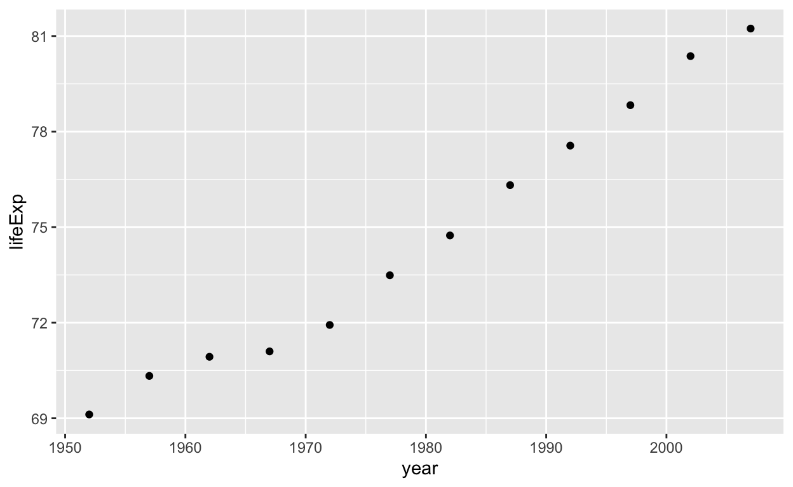
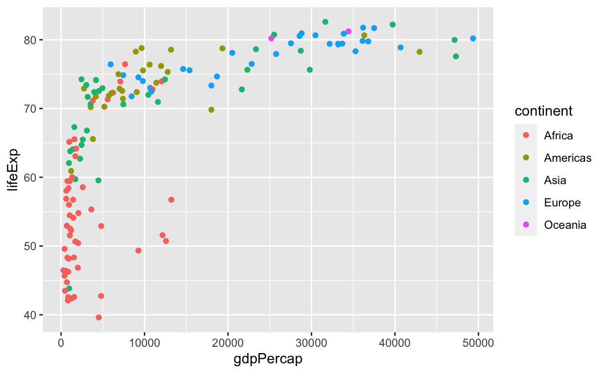

The data that we will explore in this tutorial are from the Gapminder Foundation. Their mission is “to fight devastating ignorance with a fact-based worldview that everyone can understand” (from https://www.gapminder.org). To this end, they provide access to a wide variety of data about the world, including information on income, population and life expectancy across many countries. The gapminder package in R provides convenient access to an excerpt from the Gapminder data, focusing on life expectancy, GDP per capita and population by country.
To examine the gapminder data, type in the name of the dataframe:
gapminderThe gapminder dataset is a dataframe with data organised in rows and columns. It provides information on life expectancy, population and gorss domestic product (GDP) for 142 countries from 1952 to 2007 in increments of five years. Each row is an observation and each column is a variable. This is similar to the organisation in a spreadsheet. (In fact, this dataset is a special form of a dataframe called a tibble, but we don’t need to worry about this here.) When viewing the gapminder dataset, we get to see the first ten observations as well as a summary of how many observations and variables there are and the type of the variables.
If you only want to view the first few rows, use the head function with the parameter n to specify how many rows to display.
Experiment with different settings for n. What happens if you leave it out altogether?
head(gapminder, n=3)head(gapminder)To get help, you can use ? to view the R documentation – in this case, information about the variables in the dataset. Note that this syntax also works with functions.
Run the code below to see the documentation for the gapminder dataset. Then try getting help for the head function. Use the information provided to answer the question below.
?gapminderYou can also use view to examine the dataframe in a spreadsheet-type form (view(gapminder)). Note that this only works in RStudio.
When exploring a dataset, we will often want to select a particular set of observations. We can use the filter function to do this.
Note that, in the code below, the line preceded by a hash (#) is a comment. It is not evaluated by R.
# Select the data for Oceania only
gapminder %>%
filter(continent == "Oceania")
# Select the data for Europe
gapminder %>%
filter(continent == "Europe")Here, the pipe operator (%>%) directs the gapminder dataset to the filter command, which serves to select certain rows according to a specified criterion. Note that we’re not changing the original dataframe, we’re just selecting observations and printing the result. filter and the other data transformation commands that we use below are loaded as part of the tidyverse package. (Technically speaking, they’re part of the dplyr package, which is one of the packages making up the overall tidyverse. We will generally load the full tidyverse for convenience)
Note also that the “==” is a logical equals which is what we use when we look at an equivalence of values.
Your turn! Fill in the blanks below to select only the observations where country is equal to Australia.
gapminder %>%
filter(___ == ___)Let’s now select data for a numeric variable. There is an important difference here to the filtering that we did above: as 2007 is numeric, we don’t need to enclose it in quotes. By contrast, when filtering variables of character strings (e.g. when filtering the variable continent for “Oceania”), quotes are required.
# Select data for 2007
gapminder %>%
filter(year == 2007)For numeric variables, we can also use comparison operators such as “>” to filter the observations.
Experiment with the code below. Find the filter settings for which only the two observations with the highest life expectancy are left.
# Select observations where life expectancy exceeds 75
gapminder %>%
filter(lifeExp > 75)We can also combine criteria, e.g. to look at observations for Oceania in 2007.
gapminder %>%
filter(continent == "Oceania" & year == 2007)Examine the documentation for filter to answer the question below:
The syntax we learned for filter generalises to other functions.
One of these is arrange, which serves to sort the data. Let’s use this to look at the data in ascending order of years
gapminder %>%
arrange(year)We can also sort by year in descending order by enclosing “year” with the desc function.
gapminder %>%
arrange(desc(year))Recall how we previously used filter to find the two observations with the highest life expectancy. Try using arrange to achieve the same result.
Another possibility is to select variables using select. This is useful when you are reading in a big dataset with many variables that you don’t need.
gapminder %>%
select(country,year,pop)And there’s lots (!) of other possibilities, but we’ll leave it at that for now.
These different functions can be sequenced to customise our results. For example, we can look at which countries had the largest populations in 2007.
gapminder %>%
filter(year == 2007) %>%
arrange(desc(pop))Let’s say, we now wanted to convert population to millions or look at GDP (not per cap). To manipulate existing / introduce new variables, we can use mutate.
# create new variable for GDP by multiplying gdpPercap and pop
gapminder %>%
mutate(gdp = gdpPercap*pop)
# convert pop to millions
gapminder %>%
mutate(pop = pop / 1000000)Now, let’s visualise some of these relationships! For example, how did life expectancy change over time? To look at this, we use ggplot to create a graph.
To use ggplot, you need to have loaded the tidyverse package. (Strictly speaking, you need the ggplot2 package, which is part of the tidyverse collection of packages.)
ggplot(gapminder, aes(x = year, y = lifeExp)) +
geom_point()Basic ggplot syntax: you need to specify the data (i.e. gapminder in this case) and the aesthetics (aes): these are the visual dimensions of a graph that are used to communicate information. You need to specify how the data map onto these dimensions, e.g. here: year maps onto the x-axis and life expectancy onto the y-axis. We then add a geometric object layer using geom_*; here, we use points, but there’s lots of other options as we shall see. Overall then, our plot is composed of the data, the aes mapping and a layer specifying the geometric object.
The plot above is not very informative as we have too many data points per year.
Let’s therefore just look at Australia. To do this, we filter and save the resulting dataframe as a new object. We can do this using the assignment operator <-.
# create a new dataframe containing only the data from Australia
lifeExpAus <- gapminder %>%
filter(country == "Australia")
# then use the new data to plot
ggplot(lifeExpAus, aes(x = year, y = lifeExp)) +
geom_point()
Your turn: create a plot for a different country of your choice!
___ <- gapminder %>%
filter(___ == ___)
# then use the new data to plot
ggplot(___, aes(x = year, y = lifeExp)) +
geom_point()# if you need a list of countries in the dataset, run
unique(gapminder$country)To create a line graph rather than a scatterplot, we change geom_point() to geom_line().
ggplot(lifeExpAus, aes(x = year, y = lifeExp)) +
geom_line()Now let’s look at how to compare different groups of a certain variable. In this case, we’ll look at life expectancy changes per continent over time.
To do this, we need to prepare the data in a slightly different way: we want a mean value per continent per year. This type of summary statistic can be calculated using the summarise function. We’ll start with a very simple example: the mean life expectancy across the entire dataset.
gapminder %>%
summarise(meanLifeExp = mean(lifeExp))In addition to mean, there are lots of different in-built functions to compute summary statistics, including median, sd, min, max etc. We can compute multiple of these at once.
gapminder %>%
summarise(meanLifeExp = mean(lifeExp),
medianLifeExp = median(lifeExp),
sdLifeExp = sd(lifeExp))If we want to look at the values just for Australia, we can combine filter and summarise.
gapminder %>%
filter(country == "Australia") %>%
summarise(meanLifeExp = mean(lifeExp),
medianLifeExp = median(lifeExp),
sdLifeExp = sd(lifeExp))Now we’re ready to see how to compute summary stats per continent, we use the group_by function to group first and then use summarise.
gapminder %>%
group_by(continent) %>%
summarise(meanLifeExp = mean(lifeExp))But hang on, this only gives us one number per country! To see the change over time, we also need to group by year.
gapminder %>%
group_by(continent, year) %>%
summarise(meanLifeExp = mean(lifeExp))And to use this data to plot, we need to save it as a new data frame.
lifeExpPerContinent <- gapminder %>%
group_by(continent, year) %>%
summarise(meanLifeExp = mean(lifeExp))## `summarise()` regrouping output by 'continent' (override with `.groups` argument)Finally, we’re ready to plot! Note the use of the new aes parameter colour. This groups observations by continent.
ggplot(lifeExpPerContinent, aes(x = year, y = meanLifeExp, colour = continent)) +
geom_line()Another way to group observations is to create facets:
ggplot(lifeExpPerContinent, aes(x = year, y = meanLifeExp)) +
geom_line() +
facet_wrap(~ continent)
ggplot(lifeExpPerContinent, aes(x = year, y = meanLifeExp, colour = continent)) +
geom_line() +
facet_wrap(~ continent)There’s lots of different aesthetics we can use. size is one that can be helpful for numeric data (while colour is useful for categorical data). Let’s look at the relationship between GDP per capita and life expectancy, restricting data to the year 2007 and colour-coding by continent.
# filter and create new dataframe
gapminder2007 <- gapminder %>%
filter(year == 2007)
# visualise the basic relationship
ggplot(gapminder2007, aes(x = gdpPercap, y = lifeExp, colour = continent)) +
geom_point()
Notice that, in the figure above, lots of data points are clustered close to 0. This is a problem because the differences in gdpPercap are huge between countries, differing in orders of magnitude. To see how big these differences are, we can use summary, which is a useful function for a first look at the distribution of a variable.
summary(gapminder2007$gdpPercap)When plotting, we can address this problem by using a logarithmic scale. This means that each increment represents a multiplication (x 10).
ggplot(gapminder2007, aes(x = gdpPercap, y = lifeExp, colour = continent)) +
geom_point() +
scale_x_log10()Finally, let’s add size to include information about population:
ggplot(gapminder2007, aes(x = gdpPercap, y = lifeExp, colour = continent, size = pop)) +
geom_point() +
scale_x_log10()Now that you know the plotting basics, you can enhance your plot by adding a title, changing axis labels etc.
ggplot(gapminder2007, aes(x = gdpPercap, y = lifeExp, colour = continent, size = pop)) +
geom_point() +
scale_x_log10() +
ggtitle("Life expectancy in 2007", subtitle = "by continent, GDP per capita and population size") +
xlab("GDP per capita (log10 scaled)") +
ylab("Life expectancy in years")
# you can also easily save the last plot created by using ggsave
# and voilà, you have a publication-quality figure!
ggsave("lifeExp2007.jpg", width = 180, units = "mm", dpi = 300)